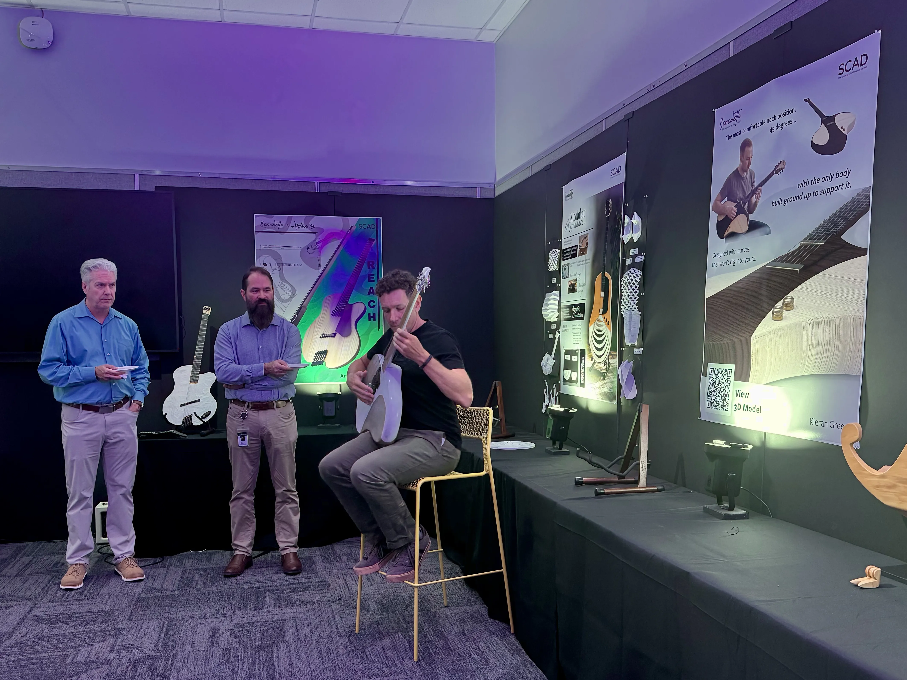
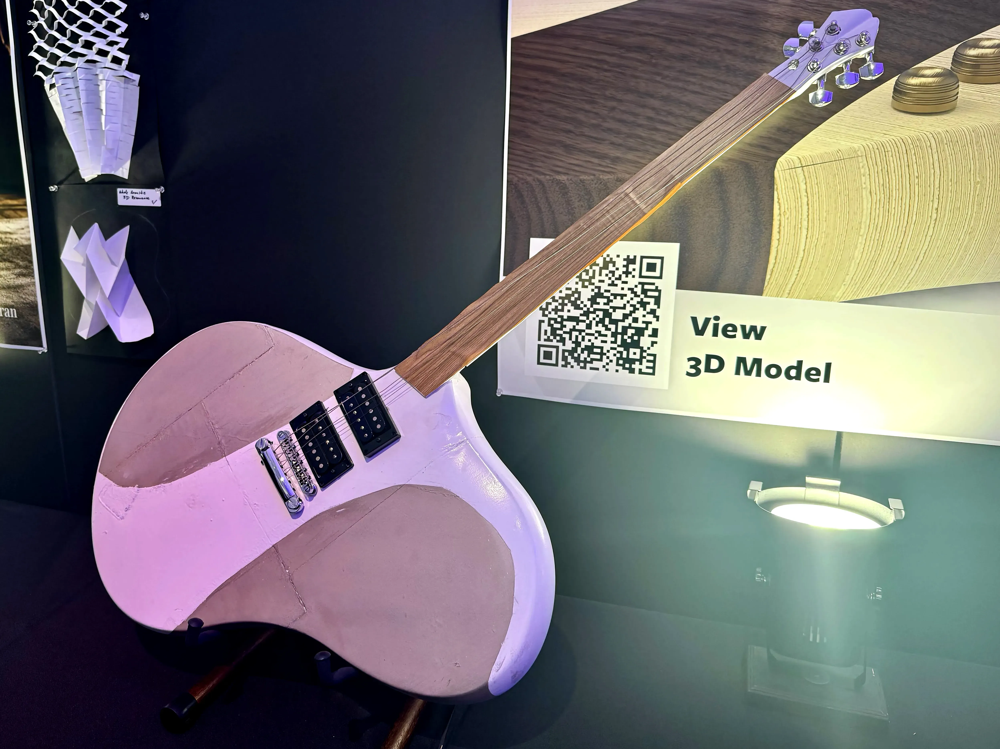
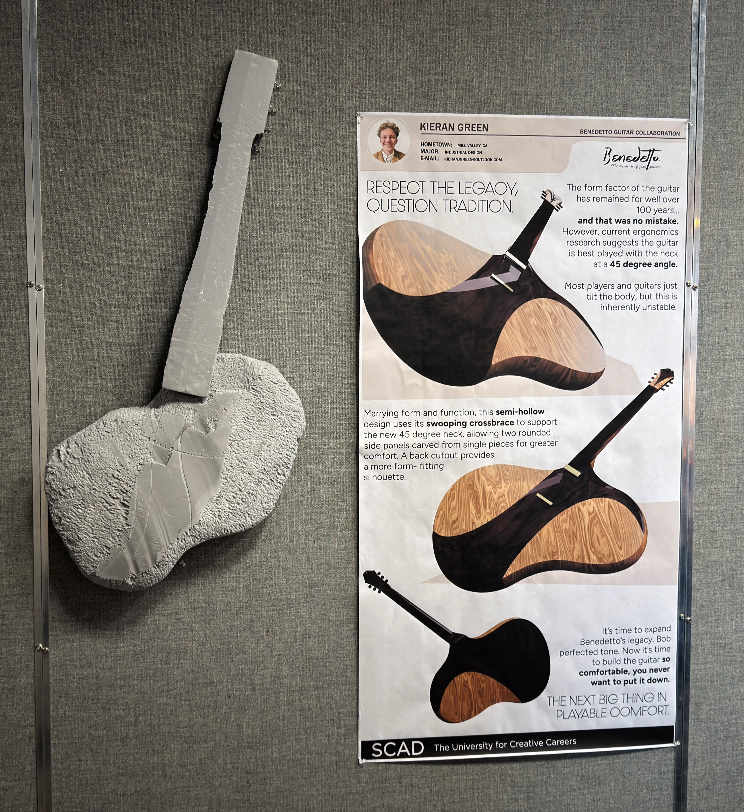
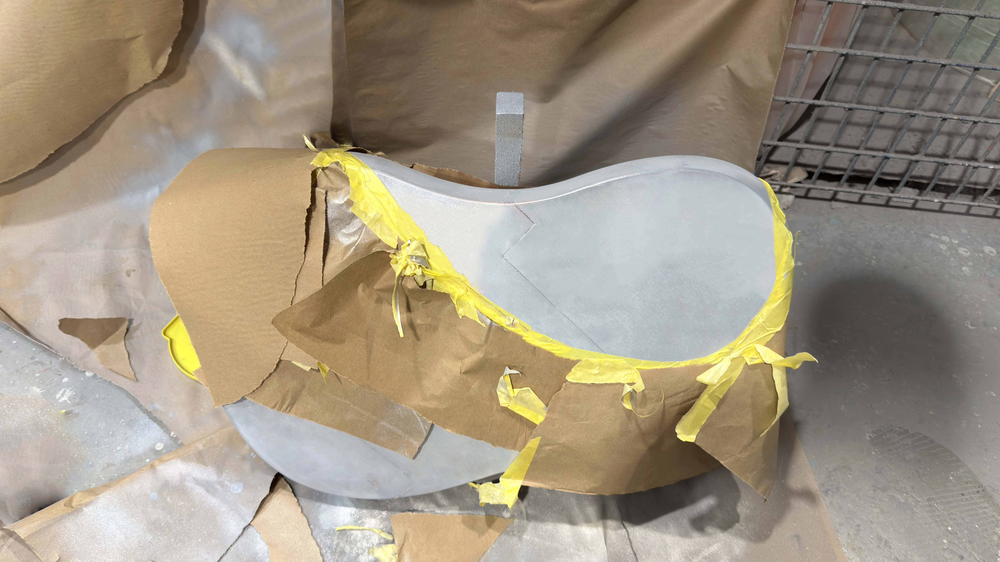

01 - 2026
Benedetto x SCAD
Guitar

How do you respect heritage and still find something worth improving?
With a name like Benedetto, the sound was never the question. After touring the factory and watching pros play, I kept coming back to everything else - the blunt edges pressing into your ribs, the wrist fighting for the right angle, the slow back-hunch that creeps in over an hour of playing. As a guitarist myself, none of it was news to me. But it felt worth actually looking at.
The fretting hand naturally wants to meet the neck at around 45 degrees. Manufacturers have tried to close that gap by angling the body with a hip cut, which works until you lift your knee and the whole thing dives forward. Keeping the body flat and angling the neck instead solves both - stable on the knee, no dive, and the hand lands where it wants to be.

Angling the neck changes everything downstream - acoustics, how the body sits against the knee, how string tension travels through the wood. Getting it right meant a lot of time in the room with physical mockups before touching Rhino, each round catching things the last one missed.



The Process
The CNC lab broke the week before final submission. Around the same time, the client flagged that mixing wood species across the playing surface could introduce acoustic interference. So I pivoted from a semi-hollow body to a fully electric one, with the prototype body 3D printed in FDM plastic. It's not entirely out of character, either. Bob Benedetto built a one-off electric in the 1980s that never made it to production, so this could be seen as a continuation of that exploration.
What This Demonstrates
This project was about finding the problem underneath the problem. The guitar's discomfort isn't a secret - but identifying neck angle specifically, when body geometry is where most people look, came from watching how players actually hold instruments rather than assuming the existing design had already accounted for it. Working within Benedetto's brand meant the solution also needed to feel considered and intentional, not just technically sound.
Angle the neck.
Not the body.